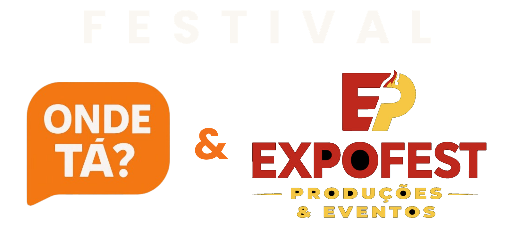
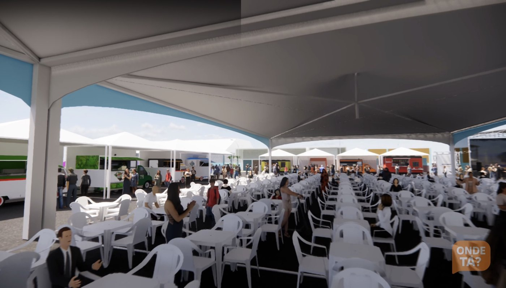
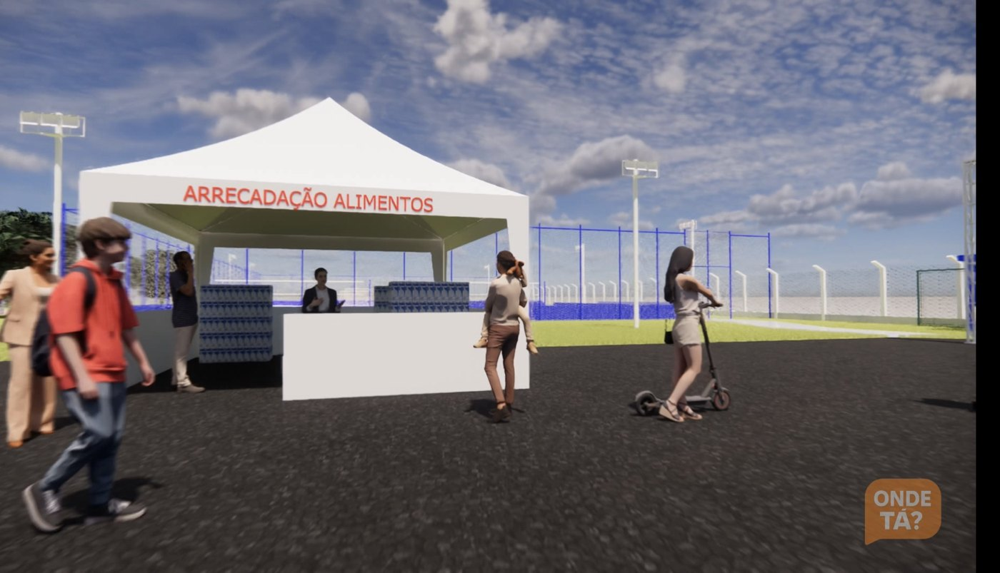
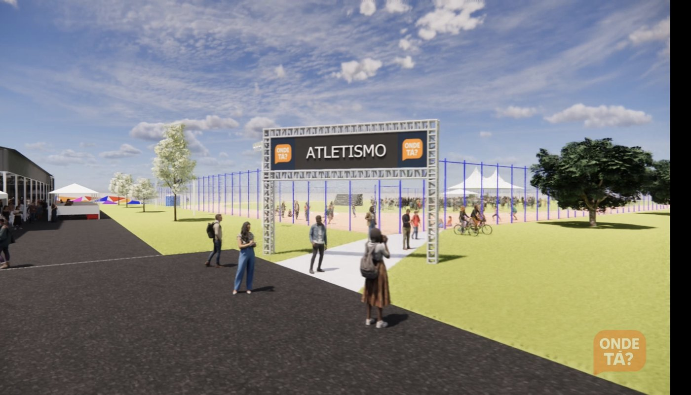
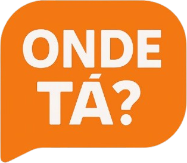
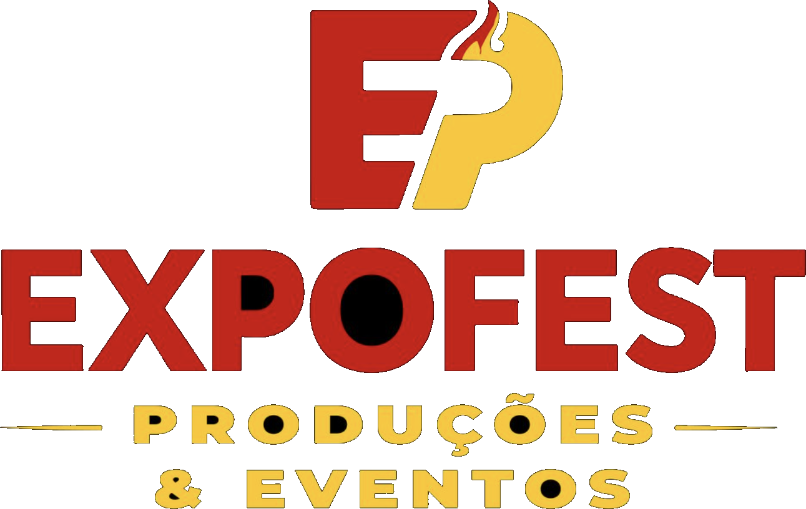

Proposta de patrocínio
Corrida social, praça gastronômica e música em palco, com entrada gratuita nos três dias. Sua marca ocupa a pista, o painel de LED, os banners do evento e o conteúdo que circula antes, durante e depois do festival.
Imagem: projeto 3D da praça gastronômica do festival
O projeto
Um passeio em 3D pela praça gastronômica, pela arena da corrida e pela área de shows — do jeito que o público vai encontrar nos dias 20, 21 e 22 de novembro.
Dimensão
Valores aproximados, em fechamento. Entrada gratuita nos três dias.
O festival
O Festival Onde Tá? & ExpoFest é realizado pela ONDE TA LTDA, operadora da plataforma Onde Tá?, em parceria operacional com a ExpoFest Produções e Eventos, no Ginásio de Esportes Décimo Chiozzini, em Matão.

Cerca de 26 operações em tendas e food trucks, aberta também ao comércio local.

Ponto de recebimento identificado, com campanha nos três dias do festival.

Pista do complexo esportivo, onde acontece a Corrida Social de domingo.
As imagens são do projeto 3D do evento — são demonstrativas de como será o festival.
Realização

Plataforma local de ingressos, delivery e descoberta de negócios em Matão. Opera venda de ingresso com QR Code, divulgação, tráfego pago e ativações com influenciadores da cidade. Responde pela comunicação, pelos patrocínios e pela operação esportiva e social.

Produtora especializada em grandes festivais gastronômicos, com circuito de eventos de costela, churrasco, hambúrguer e churros. Responde pela praça gastronômica completa, palco, som, iluminação, painel de LED e tendas.
Audiência
visualizações de conteúdo, só no perfil do Onde Tá?
Dados dos perfis oficiais no Instagram. As cotas Prata e Ouro entram no card final dos Reels; a Bronze entra no carrossel de patrocinadores.
Histórico
Mais de 10 eventos gerenciados pela plataforma Onde Tá? — venda de ingresso, QR Code, portaria e divulgação.
Dados de bilheteria da plataforma Onde Tá?
Programação
Montagem em 18 e 19/11 e desmontagem em 23/11. Grade musical em fechamento, sujeita a alteração.
Visibilidade
No palco principal, em loop contínuo. Aparece em toda foto e todo vídeo feito de frente para o palco.
Na praça gastronômica e na arena da Corrida Social, onde ficam atletas, famílias e público durante os três dias.
Cada inscrito procura o próprio nome e fotografa. É o ponto de foto do evento — e fica reservado à cota Ouro.
Conteúdo com os criadores locais, carrossel de patrocinadores nas redes e citação da marca pelo locutor.
Material impresso
Cada cota ocupa um número diferente de banners. Os desenhos abaixo mostram as medidas reais e onde entram as logos — representação esquemática, fora da escala de impressão.
O maior do evento e o único em que todas as cotas aparecem. Fica na área de maior circulação, onde o público come e se senta.
Fica na arena de atletismo, no domingo de manhã, onde o público se concentra para a largada e a chegada. A grade comporta 26 marcas, mas entram nela apenas as 9 cotas Prata e Ouro — cada logo ocupa várias posições e fica bem maior do que o quadrante.
Traz o nome de cada inscrito na Corrida Social. O atleta procura o próprio nome e fotografa — e as seis posições das laterais são exclusivas da cota Ouro, o que coloca três marcas no ponto de foto do evento.
Investimento
São 21 vagas no total. Cada cota entrega tudo o que a anterior entrega, mais os seus próprios itens.
| Benefício | Bronze R$ 400 |
Prata R$ 1.000 |
Ouro R$ 2.000 |
|---|---|---|---|
| Banner oficial da praça de alimentação | 30 cm | 40 cm | 60 cm |
| Painel de LED em loop contínuo | 3 s por loop~41 min no total | 6 s por loop~1h22 no total | 10 s por loop~2h17 no total |
| Carrossel de patrocinadores nas redes | Sim | Sim | Sim |
| Logo no card de encerramento dos Reels | — | Sim | Sim |
| Banner de patrocinadores da Corrida Social | — | Sim | Sim |
| Painel de nomes dos participantes da corrida | — | — | Sim |
| Total de banners no evento | 1 | 2 | 3 |
| Citação da marca pelo locutor durante o evento | — | — | Sim |
| Exclusividade de segmento | — | — | Sim |
Exclusividade de segmento: nenhum concorrente direto de um patrocinador Ouro entra como patrocinador do festival. Por isso são apenas 3 vagas.
Retorno de mídia
Valores aproximados, com as 21 cotas vendidas e 38 s de conteúdo próprio por loop. O tempo por marca aumenta se sobrarem vagas.
Divulgação
Reels e Stories com mais de 18 influenciadores · anúncio das atrações e contagem regressiva · tráfego pago no Instagram e no Facebook · divulgação dentro da plataforma Onde Tá?
Conteúdo publicado nas redes nos três dias · citação dos patrocinadores Ouro pelo locutor · painel de LED em loop contínuo · marcas presentes em toda foto e vídeo do palco.
Carrossel de patrocinadores e retrospectiva · fotos e vídeos com as marcas no palco · relatório de entregas para cada patrocinador · prioridade na renovação para a próxima edição.
Impacto social
Doadas pela organização a entidade indicada pelo Fundo Social de Solidariedade do Município.
Cada inscrito na Corrida Social entrega 1 kg de alimento, somado à campanha nos três dias.
Caminhada com idosos de instituição de acolhimento, cada um com um voluntário.
Participação sem custo na pista do complexo esportivo, aberta à cidade no domingo de manhã.
Sua marca associada a esporte infantil, inclusão de idosos e doação de alimentos — não só a um evento de entretenimento.
Calendário
Assinatura da cota, para entrar em todos os materiais impressos do festival.
Logo em alta resolução para os três banners do evento.
Arte ou vídeo finalizado para o painel de LED do palco.
Abertura do festival ao público, com três dias de evento.
Condições: a arte enviada depois do prazo entra apenas onde ainda for tecnicamente possível, sem devolução de valores. Formatos aceitos: PNG com fundo transparente, PDF ou arquivo vetorial. Formas de pagamento a combinar com cada patrocinador. Cada cota é formalizada em contrato de patrocínio com as entregas descritas.
Quem apoia
As marcas que aparecem aqui já são patrocinadores oficiais do Festival Onde Tá? & ExpoFest. Elas estão no banner da praça de alimentação, no painel de LED e no conteúdo que circula nas redes antes, durante e depois do evento.
Próximo passo
São 21 vagas no total e apenas 3 cotas Ouro com exclusividade de segmento. A reserva é confirmada com a assinatura do contrato de patrocínio.